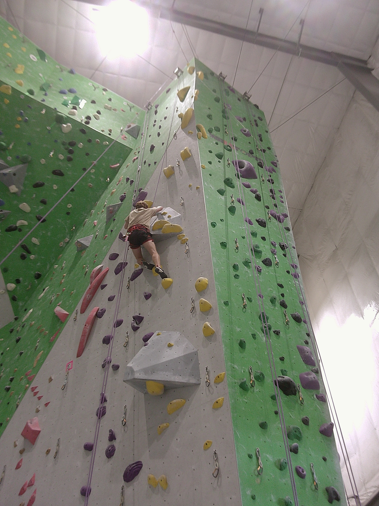

Be present.
“One breath. One move. One hold.”
A hard move gives my attention somewhere to land. I focus on where I am before worrying about how far I have left to go.
MY FAVORITE HOBBY / ROCK CLIMBING
Rock climbing challenges my body, quiets the noise, and reminds me that progress happens one hold at a time.
PICK A HOLD. EXPLORE THE ROUTE.

BE HERE.01 / WHY I CLIMB
Rock climbing is about moving up a wall or rock face using balance, strength, and a little creative thinking. Every route gives me a new puzzle: where do my feet go, which hold comes next, and how can I move differently?
I love that it asks me to be fully present. I can walk in with a busy mind, but on the wall, my attention comes back to the move in front of me. The best part is returning to a challenge and noticing something that felt impossible finally click.
02 / MORE THAN THE TOP
“Climbing pushes you to try until you fail. You fall, reset, and try again. But it also brings you back to right now: arms shaking, mind racing, still holding on. In that pressure, you find your next move. And when you overcome the obstacle, you realize the climb was never only about reaching the top.”
A personal reflection on why I climb
03 / SMALL VICTORIES
“One breath. One move. One hold.”
A hard move gives my attention somewhere to land. I focus on where I am before worrying about how far I have left to go.
“A fall can teach you the next move.”
When a move does not work, I can pause and rethink it. Sometimes progress starts with a new approach instead of more force.
“The top is not the only victory.”
Reaching one hold farther, feeling more confident, or simply coming back to try again all give me something to celebrate.
It means being curious, learning something about a route, and enjoying the process. Finishing a climb feels great, but leaving with a little more patience and confidence matters just as much.